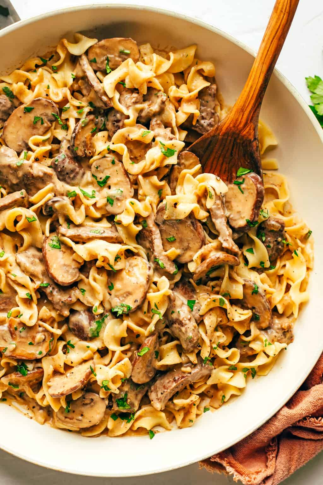

Beef Stroganoff

Description
Rich and creamy beef stroganoff recipe. Made with ground beef and served with egg noodles. Simple to prepare, and ready to serve in under 30 minutes. This is a great choice for busy weeknights.
Ingredients
- 1 (8 ounce) package egg noodles
- 1 pound ground beef
- 1 (10.5 ounce ) can fat-free condensed cream of mushroom soup
- 1 tablespoon garlic powder, or to taste
- 1/2 cup sour cream
- salt and ground black pepper to taste
Steps
- Saute ground beef in a large skillet over medium heat until browned and crumbly, 5 to 10 minutes.
- Fill a large pot with lightly salted water and bring to a rapid boil. Cook egg noodles at a boil until tender, 7 to 9 minutes. Drain and set aside.
- Drain and discard any fat from the cooked beef. Stir condensed soup and garlic powder into the beef. Simmer for 10 minutes, stirring occasionally.
- Remove beef from the heat. Add egg noodles and stir to combine. Stir in sour cream and season with salt and pepper.
- Serve hot and enjoy!